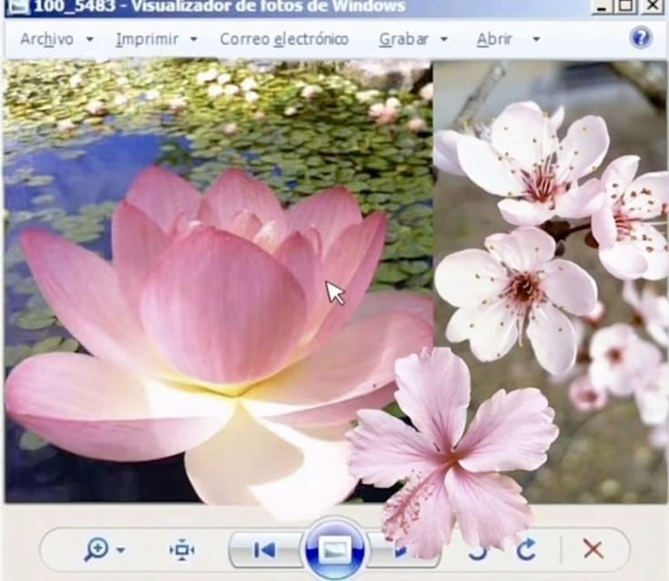

lab 4: pseudocoding and problem-solving
challenge
the challenge of this lab was to pseudocode a simple task and a simple computer game.
problems
there were not many problems that arose other than feeling doubt in my pseudocoding.
reflection
this assignment was a good exercise in mapping out code in a very simple aspect. coding should be well organized and step by step, like pseudocode. this was a method to practice.
results
//Generate a word or phrase for players to guess
//Print hanger as well as head of character
//Print blank underscore lines for each letter of secret word or phrase
//Players take turn guessing letters of the word/phrase or guess the entire phrase
//For each missed letter/phrase, new part of the character/hangman is drawn
//Test of win or lose
//The players win if they guess the entire word before the hangman figure is fully drawn. The Host wins if the hangman is fully drawn (6-7 incorrect guesses) before the players guess the word.

photo courtesy of pinterest.com